Candidate List 20261111Last night — ZTF: 2,735 passed basic cuts (41 young) · LSST: 4,531 passed basic cuts (316 young)Previous Day Next Day
Section 1: New Sources (age<1d) Section 2: Old (1-5d) sources observed last nightplaceholder
Section 1: New Afterglow/FBOT Cands Last Night (1)
1. [ZTF] ZTF19adovswt (Afterglow?) [Back to Top] [Share] [Trigger Swift] [Fritz Alert] [Fritz Source] [Lasair]RA, Dec: 92.35909, 34.55345 6h 9m26.18s, 34d33m12.41sGalactic (l, b): 177.63922, 7.18309 ext(g-r) = 0.56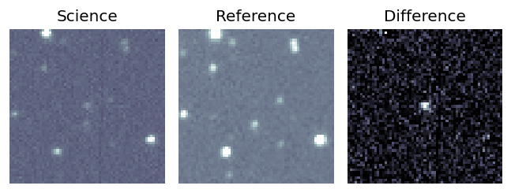
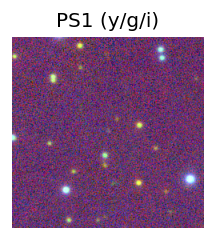
TESS: Sectors [43 44 45 71 72 73]
PS1: 1 source in 3 arcsec Closest: d = 4.57 arcsec photoz=0.99+/-0.44 peak abs mag = -25.60
LegacySurvey: 0 sources in 3 arcsec
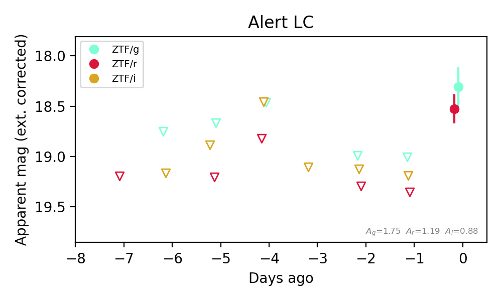
Extinction-corrected gr color:
From alerts: -0.22 +/- 0.25 mag
Consistent with synchrotron, g-r>0!
Rise Rate:
g: 0.66 mag/day
r: 0.9 mag/day
Fade Rate:
Section 2: Older Sources Observed Last Night (35)
0. [ZTF] ZTF26acffhoq (Afterglow?) (TNS: AT 2026aine) [Back to Top] [Share] [Trigger Swift] [Fritz Alert] [Fritz Source] [Lasair]RA, Dec: 135.80342, 7.24845 9h 3m12.82s, 7d14m54.42sGalactic (l, b): 222.05572, 32.52423 ext(g-r) = 0.068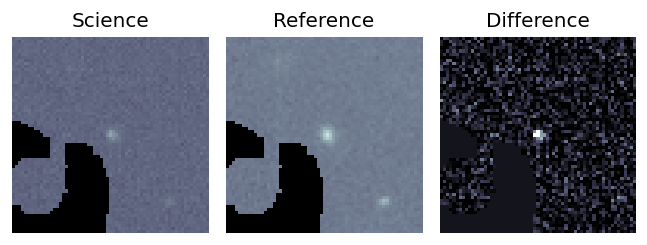
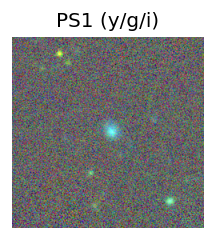
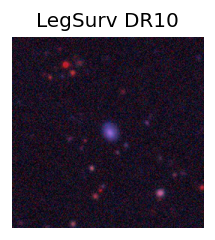
TESS: Sectors [ 8 34 44 45 46 61 72 88]
SDSS (<15 kpc):Found SDSS phot-z: z=0.09; peak abs mag = -18.75
PS1: 0 sources in 3 arcsec
LegacySurvey: 1 sources in 3 arcsec Closest: d = 0.80 arcsec, 254.8 deg (east of north) photoz=0.09 (68% bounds 0.06, 0.13), type=SER peak abs mag (ext. corrected) = -18.68 (68% bounds -17.8, -19.55)
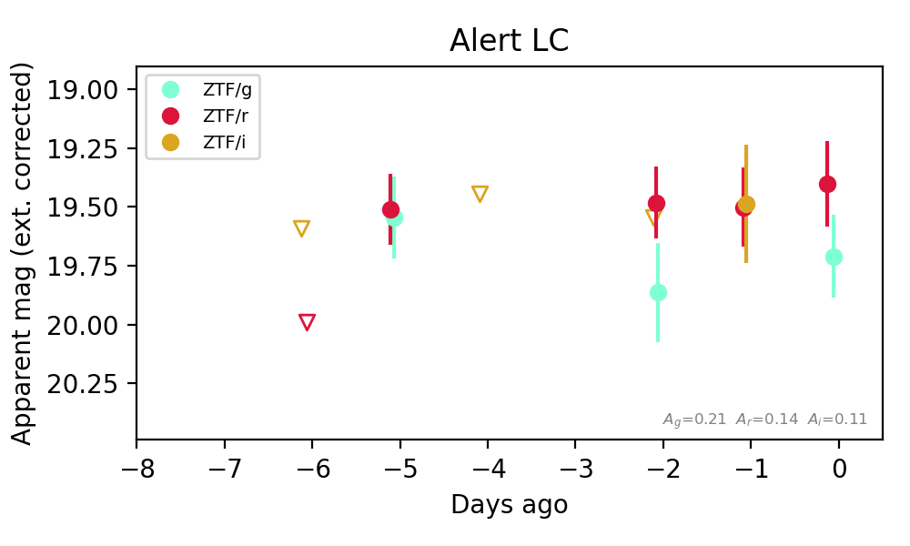
Extinction-corrected gr color:
From alerts: 0.31 +/- 0.25 mag
Extinction-corrected gi color:
From alerts: 0.32 +/- 99 mag
Extinction-corrected ri color:
From alerts: 0.01 +/- 0.3 mag
Consistent with synchrotron, g-r>0!
Rise Rate:
r: 0.5 mag/day
Fade Rate:
1. [LSST] 171145616850681952 (FBOT?) [Back to Top] [Fritz Alert] [Fritz Source] [Lasair]RA, Dec: 58.45665, -48.68762 3h53m49.60s, -48d-41m-15.42sGalactic (l, b): 257.08237, -48.90309 ext(g-r) = 0.008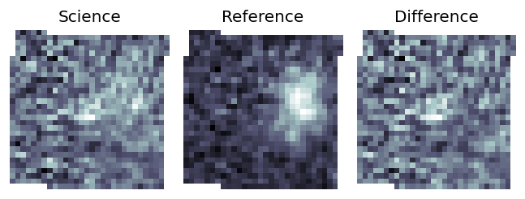

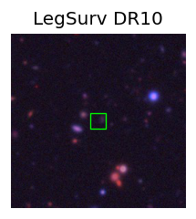
TESS: Sectors [ 3 30 97]
PS1: 0 sources in 3 arcsec
LegacySurvey: 1 sources in 3 arcsec Closest: d = 1.64 arcsec, 285.9 deg (east of north) photoz=0.57 (68% bounds 0.44, 0.66), type=EXP peak abs mag (ext. corrected) = -20.01 (68% bounds -19.32, -20.39)
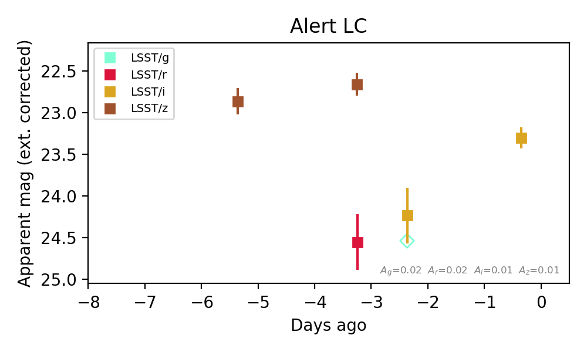
Extinction-corrected gi color:
From alerts: 0.3 +/- 99 mag
Rise Rate:
i: 0.46 mag/day
Fade Rate:
2. [LSST] 171167616344260661 (FBOT?) [Back to Top] [Fritz Alert] [Fritz Source] [Lasair]RA, Dec: 60.08822, -48.65171 4h 0m21.17s, -48d-39m-6.16sGalactic (l, b): 256.63977, -47.86586 ext(g-r) = 0.009


TESS: Sectors [ 3 4 5 30 31 97]
PS1: 0 sources in 3 arcsec
LegacySurvey: 1 sources in 3 arcsec Closest: d = 0.08 arcsec, 338.3 deg (east of north) photoz=0.93 (68% bounds 0.7, 1.23), type=DEV peak abs mag (ext. corrected) = -20.36 (68% bounds -19.59, -21.09)

Rise Rate:
r: 0.29 mag/day
Fade Rate:
3. [LSST] 171167616525140015 (Afterglow?) [Back to Top] [Fritz Alert] [Fritz Source] [Lasair]RA, Dec: 61.43596, -47.53953 4h 5m44.63s, -47d-32m-22.32sGalactic (l, b): 254.75214, -47.21516 ext(g-r) = 0.016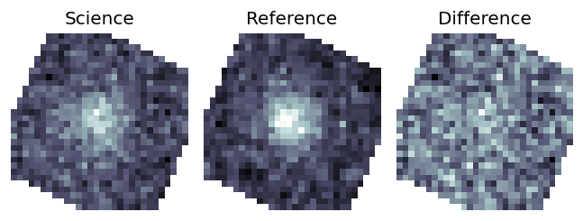

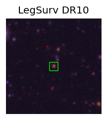
TESS: Sectors [ 3 5 30 97]
PS1: 0 sources in 3 arcsec
LegacySurvey: 1 sources in 3 arcsec Closest: d = 0.16 arcsec, 254.5 deg (east of north) photoz=0.52 (68% bounds 0.51, 0.54), type=REX peak abs mag (ext. corrected) = -19.26 (68% bounds -19.2, -19.34)
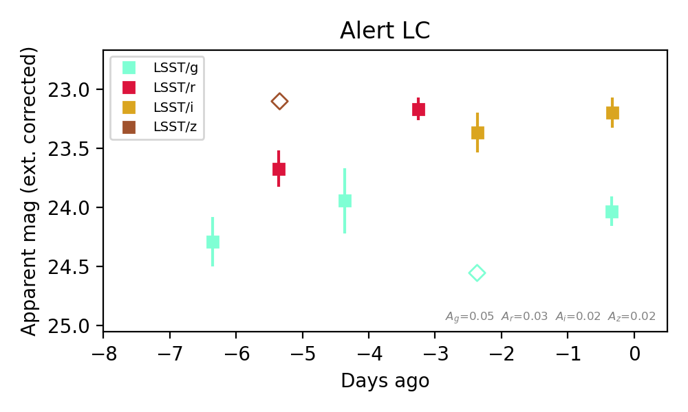
Extinction-corrected gi color:
From alerts: 0.84 +/- 0.18 mag
Consistent with synchrotron, g-r>0!
Rise Rate:
g: 0.26 mag/day
r: 0.24 mag/day
Fade Rate:
g: 0.31 mag/day
4. [LSST] 171167627140399126 (FBOT?) [Back to Top] [Fritz Alert] [Fritz Source] [Lasair]RA, Dec: 64.84411, -47.0849 4h19m22.59s, -47d-5m-5.65sGalactic (l, b): 253.57976, -45.00496 ext(g-r) = 0.012


TESS: Sectors [ 4 5 30 31 32 97]
PS1: 0 sources in 3 arcsec
LegacySurvey: 1 sources in 3 arcsec Closest: d = 1.69 arcsec, 101.3 deg (east of north) photoz=0.45 (68% bounds 0.37, 0.54), type=EXP peak abs mag (ext. corrected) = -19.81 (68% bounds -19.27, -20.29)

Extinction-corrected gi color:
From alerts: 0.35 +/- 0.06 mag
Consistent with synchrotron, g-r>0!
Rise Rate:
r: 0.24 mag/day
i: 0.16 mag/day
Fade Rate:
5. [ZTF] ZTF26aceyofp (Afterglow?FBOT?) [Back to Top] [Share] [Trigger Swift] [Fritz Alert] [Fritz Source] [Lasair]RA, Dec: 21.18118, 45.94458 1h24m43.48s, 45d56m40.50sGalactic (l, b): 128.95805, -16.53732 ext(g-r) = 0.076Observed last night in r, not detected: limit 20.34 (5σ), 4.06 d after the last r detection at 19.76 → fading ≥ 0.14 mag/day.


TESS: Sectors [17 18 58 85]
SDSS (<15 kpc):Found SDSS phot-z: z=0.19; peak abs mag = -20.25
PS1: 0 sources in 3 arcsec
LegacySurvey: 0 sources in 3 arcsec

Extinction-corrected gr color:
From alerts: 0.38 +/- 99 mag
Rise Rate:
r: 0.26 mag/day
Fade Rate:
r: 0.75 mag/day
6. [LSST] 171171984798908439 (FBOT?) [Back to Top] [Fritz Alert] [Fritz Source] [Lasair]RA, Dec: 7.93956, -43.39742 0h31m45.49s, -43d-23m-50.71sGalactic (l, b): 315.41983, -73.25044 ext(g-r) = 0.005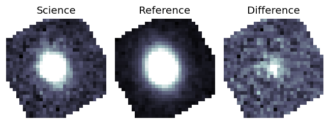

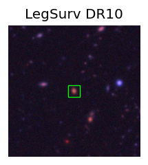
TESS: Sectors [ 69 96 103 104 105 106]
NED host (10 arcsec):Found WISEA J003145.49-432350.9 (G, 0.3″); NED spec-z: z=0.4659 [zflag S1L]; peak abs mag = -19.50
PS1: 0 sources in 3 arcsec
LegacySurvey: 1 sources in 3 arcsec Closest: d = 0.16 arcsec, 119.7 deg (east of north) photoz=0.43 (68% bounds 0.42, 0.45), type=SER peak abs mag (ext. corrected) = -19.3 (68% bounds -19.21, -19.41)
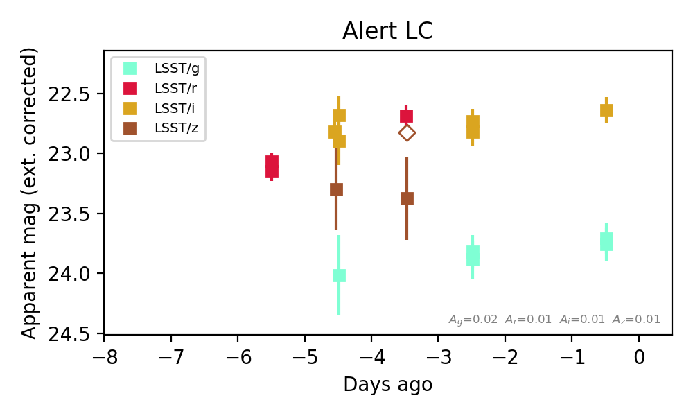
Extinction-corrected gi color:
From alerts: 1.09 +/- 0.14 mag
Extinction-corrected iz color:
From alerts: -0.51 +/- 0.36 mag
Consistent with synchrotron, g-r>0!
Rise Rate:
r: 0.21 mag/day
Fade Rate:
7. [ZTF] ZTF26acffqjy (Afterglow?) (TNS: AT 2026aimh) [Back to Top] [Share] [Trigger Swift] [Fritz Alert] [Fritz Source] [Lasair]RA, Dec: 119.74697, 25.69861 7h58m59.27s, 25d41m55.01sGalactic (l, b): 195.752, 25.51166 WARNING: 4.97 deg from ecliptic plane ext(g-r) = 0.042Observed last night in r, not detected: limit 20.46 (5σ), 0.97 d after the last r detection at 19.47 → fading ≥ 1.02 mag/day.


TESS: Sectors [44 45 46 71 72]
NED host (10 arcsec):Found 2MASS J07585928+2541542 (G, 0.8″); NED spec-z: z=0.0423 [zflag SLS]; peak abs mag = -17.05
PS1: 0 sources in 3 arcsec
LegacySurvey: 1 sources in 3 arcsec Closest: d = 0.81 arcsec, 168.6 deg (east of north) photoz=0.03 (68% bounds 0.03, 0.05), type=SER peak abs mag (ext. corrected) = -16.57 (68% bounds -15.92, -17.43)

Extinction-corrected gr color:
From alerts: 0.18 +/- 0.08 mag
Extinction-corrected gi color:
From alerts: 0.06 +/- 0.19 mag
Extinction-corrected ri color:
From alerts: -0.12 +/- 0.19 mag
Consistent with synchrotron, g-r>0!
Rise Rate:
g: 0.51 mag/day
r: 0.98 mag/day
i: 0.08 mag/day
Fade Rate:
r: 1.02 mag/day
i: 0.48 mag/day
8. [ZTF] ZTF26acfuuwt (Afterglow?FBOT?) [Back to Top] [Share] [Trigger Swift] [Fritz Alert] [Fritz Source] [Lasair]RA, Dec: 86.94436, 54.47608 5h47m46.65s, 54d28m33.90sGalactic (l, b): 157.96631, 13.25655 ext(g-r) = 0.198Observed last night in r, not detected: limit 20.54 (5σ), 3.11 d after the last r detection at 19.77 → fading ≥ 0.25 mag/day.


TESS: Sectors [19 59]
PS1: 1 source in 3 arcsec Closest: d = 2.01 arcsec photoz=0.21+/-0.03 peak abs mag = -20.82
LegacySurvey: 0 sources in 3 arcsec

Extinction-corrected gr color:
From alerts: -0.66 +/- 99 mag
Rise Rate:
r: 0.54 mag/day
Fade Rate:
r: 0.39 mag/day
9. [ZTF] ZTF26acfzwfi (FBOT?) [Back to Top] [Share] [Trigger Swift] [Fritz Alert] [Fritz Source] [Lasair]RA, Dec: 156.14903, 44.3698 10h24m35.77s, 44d22m11.29sGalactic (l, b): 172.73644, 55.98426 ext(g-r) = 0.018Observed last night in g, not detected: limit 20.43 (5σ), 2.99 d after the last g detection at 20.04 → fading ≥ 0.13 mag/day.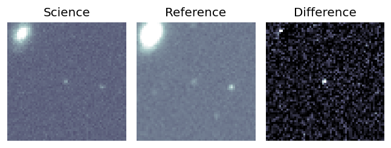
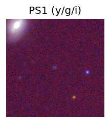
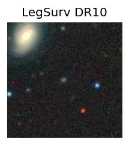
TESS: Sectors [21 48]
PS1: 0 sources in 3 arcsec
LegacySurvey: 1 sources in 3 arcsec Closest: d = 0.61 arcsec, 97.6 deg (east of north) photoz=0.22 (68% bounds 0.16, 0.29), type=EXP peak abs mag (ext. corrected) = -20.3 (68% bounds -19.48, -20.97)
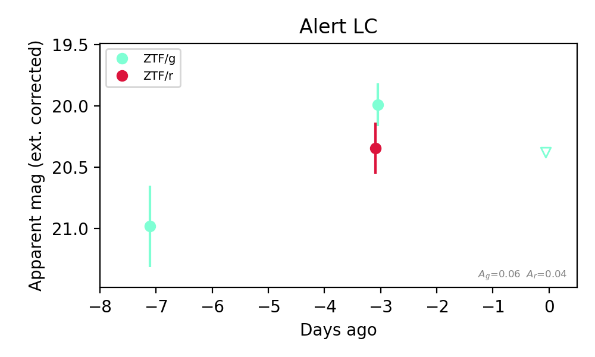
Extinction-corrected gr color:
From alerts: -0.35 +/- 0.27 mag
Rise Rate:
g: 0.24 mag/day
Fade Rate:
g: 0.13 mag/day
10. [ZTF] ZTF26acflemr (Afterglow?) (TNS: AT 2026aizl) [Back to Top] [Share] [Trigger Swift] [Fritz Alert] [Fritz Source] [Lasair]RA, Dec: 74.65905, 12.57587 4h58m38.17s, 12d34m33.13sGalactic (l, b): 187.76852, -18.13144 ext(g-r) = 0.45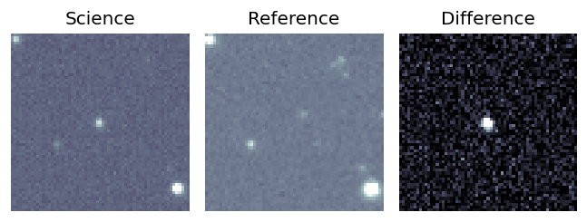
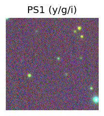

TESS: Sectors [ 5 32 43 44 71 98 110]
PS1: 0 sources in 3 arcsec
LegacySurvey: 0 sources in 3 arcsec
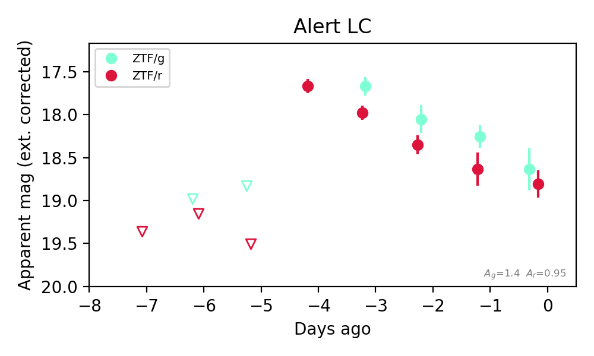
Extinction-corrected gr color:
From alerts: -0.17 +/- 0.29 mag
Consistent with synchrotron, g-r>0!
Rise Rate:
g: 0.56 mag/day
r: 1.84 mag/day
Fade Rate:
g: 0.31 mag/day
r: 0.3 mag/day
11. [ZTF] ZTF26acfphsv (FBOT?) (TNS: AT 2026ajdz) [Back to Top] [Share] [Trigger Swift] [Fritz Alert] [Fritz Source] [Lasair]RA, Dec: 17.09305, 27.58621 1h 8m22.33s, 27d35m10.34sGalactic (l, b): 127.5209, -35.13461 ext(g-r) = 0.063

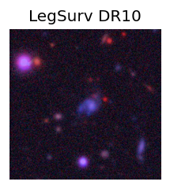
TESS: Sectors [57 84]
SDSS (<15 kpc):Found SDSS phot-z: z=0.27; peak abs mag = -21.55
PS1: 0 sources in 3 arcsec
LegacySurvey: 1 sources in 3 arcsec Closest: d = 1.47 arcsec, 315.7 deg (east of north) photoz=0.53 (68% bounds 0.05, 1.47), type=PSF peak abs mag (ext. corrected) = -23.26 (68% bounds -17.45, -25.98)

Extinction-corrected gr color:
From alerts: -0.25 +/- 0.19 mag
Extinction-corrected gi color:
From alerts: 0.76 +/- 99 mag
Extinction-corrected ri color:
From alerts: 1.27 +/- 99 mag
Rise Rate:
g: 0.28 mag/day
r: 0.2 mag/day
Fade Rate:
12. [ZTF] ZTF26acgidft (Afterglow?) [Back to Top] [Share] [Trigger Swift] [Fritz Alert] [Fritz Source] [Lasair]RA, Dec: 86.94537, 54.49935 5h47m46.89s, 54d29m57.68sGalactic (l, b): 157.94557, 13.26814 ext(g-r) = 0.196Observed last night in g, not detected: limit 20.64 (5σ), 2.11 d after the last g detection at 20.11 → fading ≥ 0.25 mag/day.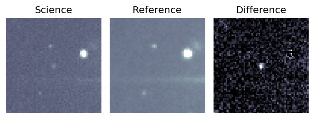
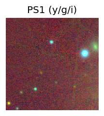

TESS: Sectors [19 59]
PS1: 1 source in 3 arcsec Closest: d = 9.66 arcsec photoz=0.50+/-0.26 peak abs mag = -23.07
LegacySurvey: 0 sources in 3 arcsec
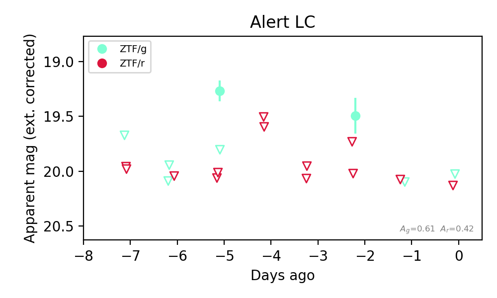
Extinction-corrected gr color:
From alerts: -0.52 +/- 99 mag
Rise Rate:
g: 0.74 mag/day
Fade Rate:
g: 0.58 mag/day
13. [LSST] 171172017886724245 (Afterglow?) [Back to Top] [Fritz Alert] [Fritz Source] [Lasair]RA, Dec: 62.34915, -47.50095 4h 9m23.80s, -47d-30m-3.43sGalactic (l, b): 254.53477, -46.61536 ext(g-r) = 0.014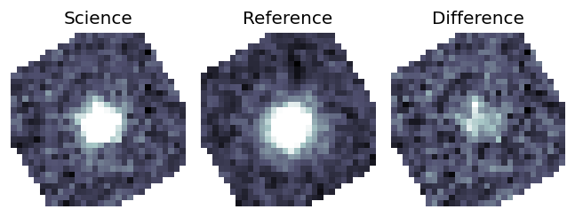

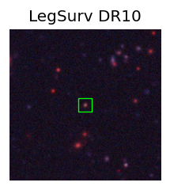
TESS: Sectors [ 3 5 30 97]
PS1: 0 sources in 3 arcsec
LegacySurvey: 1 sources in 3 arcsec Closest: d = 0.26 arcsec, 186.8 deg (east of north) photoz=0.45 (68% bounds 0.42, 0.49), type=REX peak abs mag (ext. corrected) = -19.15 (68% bounds -18.98, -19.37)
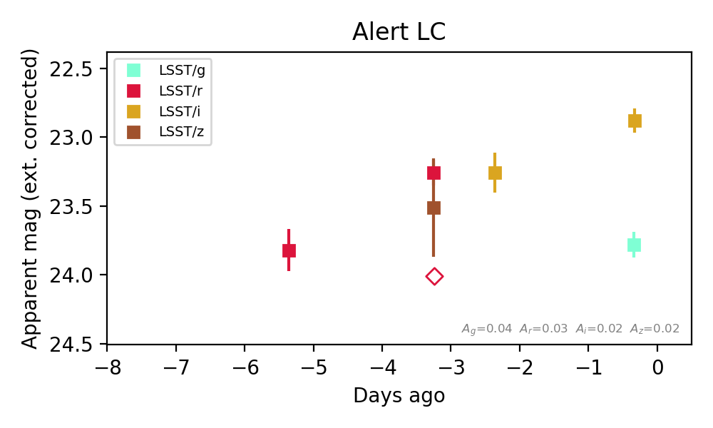
Extinction-corrected gi color:
From alerts: 0.9 +/- 0.13 mag
Consistent with synchrotron, g-r>0!
Rise Rate:
r: 0.27 mag/day
i: 0.19 mag/day
Fade Rate:
r: 49.76 mag/day
14. [LSST] 171180824436146227 (Afterglow?) (TNS: AT 2026aisb) [Back to Top] [Fritz Alert] [Fritz Source] [Lasair]RA, Dec: 58.5606, -49.96264 3h54m14.54s, -49d-57m-45.49sGalactic (l, b): 258.91831, -48.50035 ext(g-r) = 0.01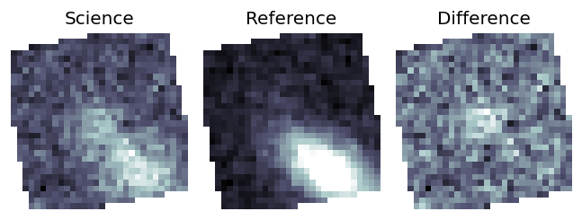

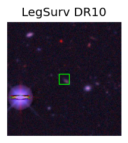
TESS: Sectors [ 3 4 30 31 97]
PS1: 0 sources in 3 arcsec
LegacySurvey: 1 sources in 3 arcsec Closest: d = 2.18 arcsec, 219.3 deg (east of north) photoz=0.41 (68% bounds 0.34, 0.48), type=SER peak abs mag (ext. corrected) = -19.04 (68% bounds -18.5, -19.42)
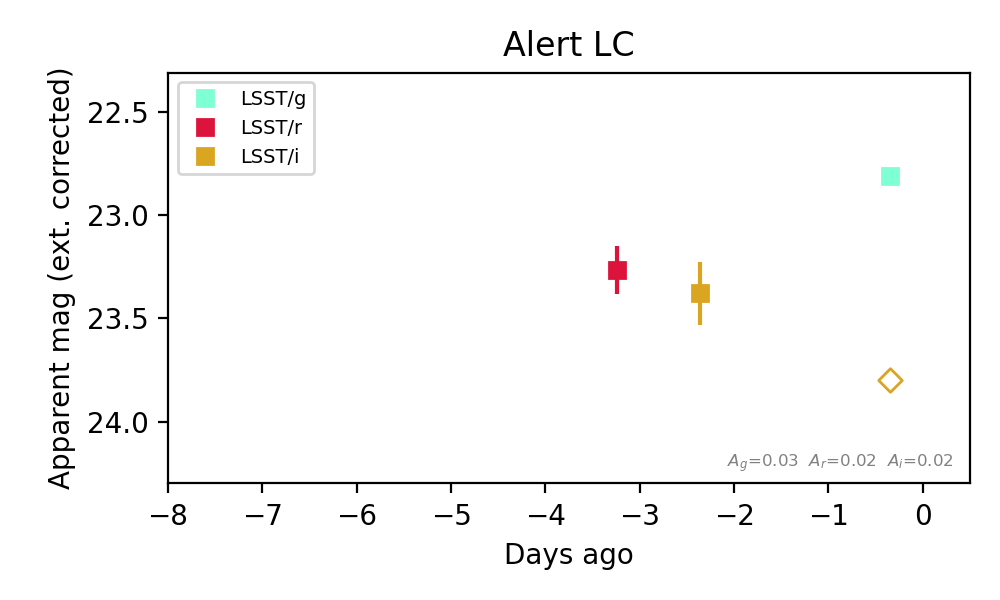
Extinction-corrected gi color:
From alerts: -0.99 +/- 99 mag
Rise Rate:
Fade Rate:
i: 0.21 mag/day
15. [ZTF] ZTF26acgcrmi (FBOT?) (TNS: AT 2026ajdq) [Back to Top] [Share] [Trigger Swift] [Fritz Alert] [Fritz Source] [Lasair]RA, Dec: 14.75207, -21.78787 0h59m0.50s, -21d-47m-16.33sGalactic (l, b): 141.21097, -84.38893 ext(g-r) = 0.019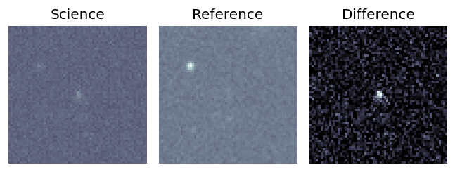
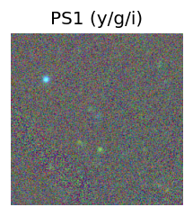
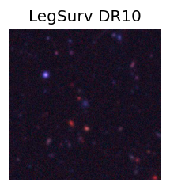
TESS: Sectors [ 3 30 107 108]
PS1: 0 sources in 3 arcsec
LegacySurvey: 1 sources in 3 arcsec Closest: d = 0.47 arcsec, 5.9 deg (east of north) photoz=0.12 (68% bounds 0.09, 0.16), type=EXP peak abs mag (ext. corrected) = -19.64 (68% bounds -19.14, -20.35)
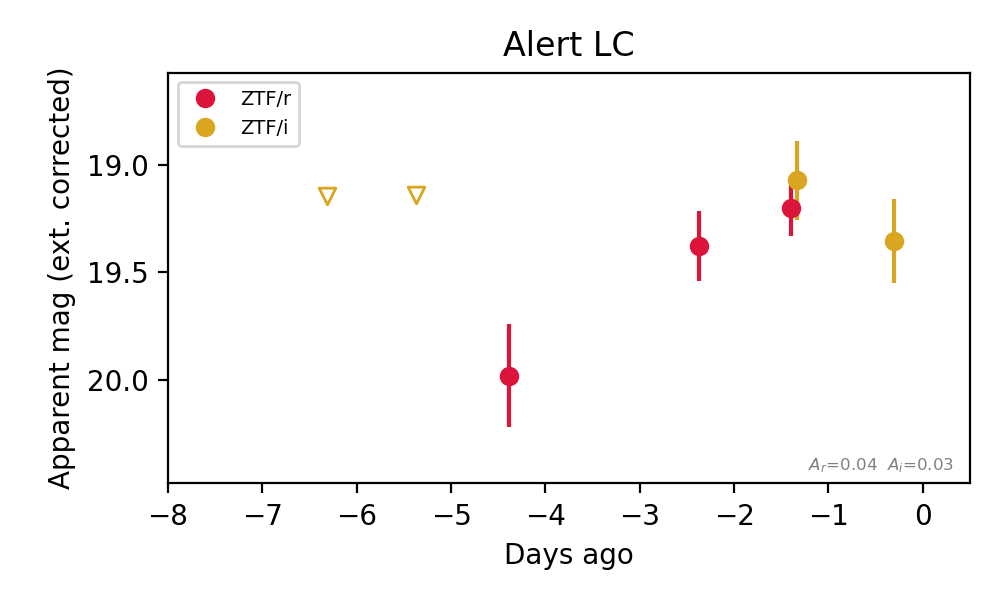
Extinction-corrected ri color:
From alerts: 0.13 +/- 0.22 mag
Consistent with synchrotron, g-r>0!
Rise Rate:
r: 0.26 mag/day
i: 0.02 mag/day
Fade Rate:
16. [ZTF] ZTF26acgknyc (Afterglow?) (TNS: AT 2026ajcc) [Back to Top] [Share] [Trigger Swift] [Fritz Alert] [Fritz Source] [Lasair]RA, Dec: 86.83685, -1.55827 5h47m20.84s, -1d-33m-29.79sGalactic (l, b): 206.89496, -14.9491 ext(g-r) = 0.899Observed last night in i, not detected: limit 19.63 (5σ), 1.04 d after the last i detection at 19.36 → fading ≥ 0.26 mag/day.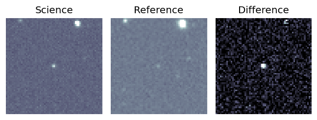
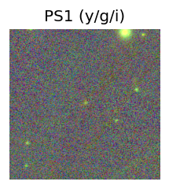

TESS: Sectors [ 6 33 98 110 111]
PS1: 0 sources in 3 arcsec
LegacySurvey: 0 sources in 3 arcsec
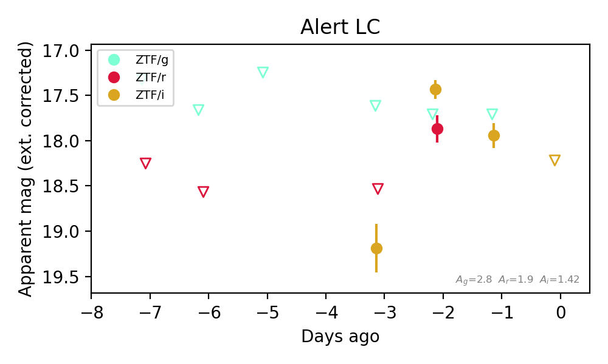
Extinction-corrected gr color:
From alerts: -0.17 +/- 99 mag
Extinction-corrected gi color:
From alerts: -0.24 +/- 99 mag
Extinction-corrected ri color:
From alerts: 0.44 +/- 0.18 mag
Consistent with synchrotron, g-r>0!
Rise Rate:
r: 0.65 mag/day
Fade Rate:
i: 0.39 mag/day
17. [ZTF] ZTF26acgncvb (Afterglow?) (TNS: AT 2026ajbt) [Back to Top] [Share] [Trigger Swift] [Fritz Alert] [Fritz Source] [Lasair]RA, Dec: 192.80275, 4.85802 12h51m12.66s, 4d51m28.86sGalactic (l, b): 302.78277, 67.7297 ext(g-r) = 0.04Observed last night in r, not detected: limit 19.13 (5σ), 1.00 d after the last r detection at 18.50 → fading ≥ 0.63 mag/day.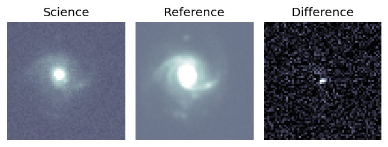
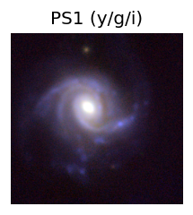
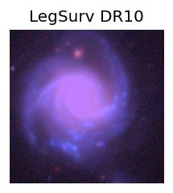
TESS: Sectors [ 23 46 50 91 115]
NED host (10 arcsec):Found NGC 4734 (G, 4.8″); NED spec-z: z=0.0250 [zflag SLS]; peak abs mag = -16.85
NED photo-z only: SDSS J125112.13+045126.5 (*, 8.2″) z=0.8050 [zflag PUN] — not used for peak abs mag
PS1: 0 sources in 3 arcsec
LegacySurvey: 1 sources in 3 arcsec Closest: d = 4.97 arcsec, 46.4 deg (east of north) photoz=0.02 (68% bounds 0.02, 0.03), type=SER peak abs mag (ext. corrected) = -16.43 (68% bounds -15.91, -16.85)
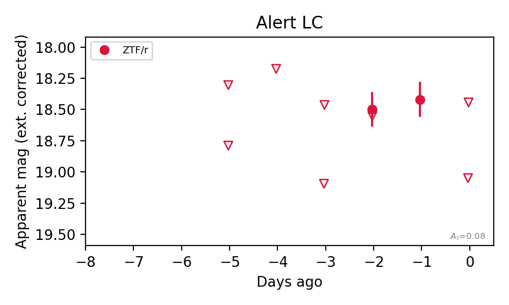
Rise Rate:
r: 0.59 mag/day
Fade Rate:
r: 0.63 mag/day
18. [ZTF] ZTF26acgtzad (Afterglow?) [Back to Top] [Share] [Trigger Swift] [Fritz Alert] [Fritz Source] [Lasair]RA, Dec: 74.02552, 77.33724 4h56m6.13s, 77d20m14.06sGalactic (l, b): 134.76532, 20.53646 ext(g-r) = 0.151Observed last night in r, not detected: limit 19.95 (5σ), 1.04 d after the last r detection at 19.54 → fading ≥ 0.39 mag/day.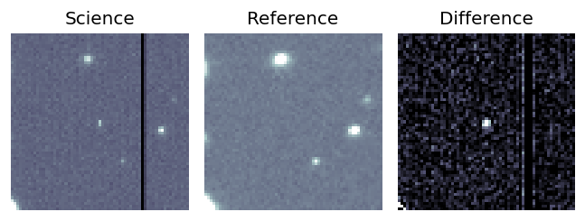
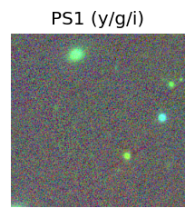

TESS: Sectors [19 25 26 52 53 59 60 73 79 86]
PS1: 0 sources in 3 arcsec
LegacySurvey: 0 sources in 3 arcsec
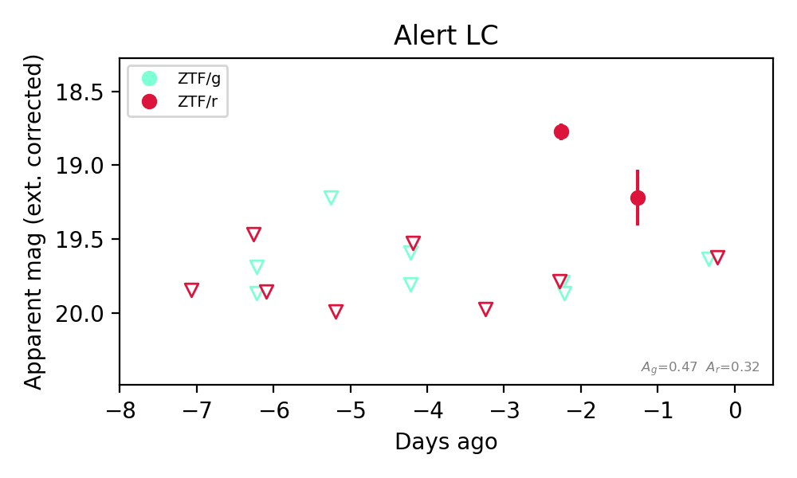
Extinction-corrected gr color:
From alerts: 1.09 +/- 99 mag
Rise Rate:
r: 48.07 mag/day
Fade Rate:
r: 0.45 mag/day
19. [ZTF] ZTF26acgwwow (Afterglow?) [Back to Top] [Share] [Trigger Swift] [Fritz Alert] [Fritz Source] [Lasair]RA, Dec: 113.48379, 34.4108 7h33m56.11s, 34d24m38.90sGalactic (l, b): 184.79709, 23.14495 ext(g-r) = 0.057Observed last night in g, not detected: limit 20.69 (5σ), 1.09 d after the last g detection at 19.70 → fading ≥ 0.90 mag/day.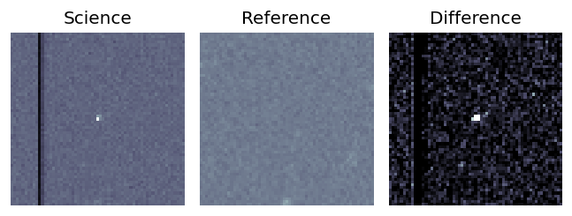
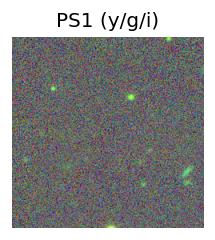
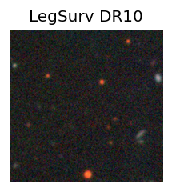
TESS: Sectors [20 44 45 47 60]
PS1: 0 sources in 3 arcsec
LegacySurvey: 0 sources in 3 arcsec
Extinction-corrected gr color:
From alerts: 0.38 +/- 99 mag
Extinction-corrected gi color:
From alerts: 1.03 +/- 99 mag
Rise Rate:
g: 0.92 mag/day
Fade Rate:
g: 0.9 mag/day
20. [ZTF] ZTF26achbctz (Afterglow?) [Back to Top] [Share] [Trigger Swift] [Fritz Alert] [Fritz Source] [Lasair]RA, Dec: 107.70002, 32.89332 7h10m48.01s, 32d53m35.97sGalactic (l, b): 184.60471, 18.10107 ext(g-r) = 0.061Observed last night in r, not detected: limit 20.38 (5σ), 0.91 d after the last r detection at 19.70 → fading ≥ 0.74 mag/day.
TESS: Sectors [20 44 45 47 60 71 72]
PS1: 0 sources in 3 arcsec
LegacySurvey: 1 sources in 3 arcsec Closest: d = 3.13 arcsec, 254.0 deg (east of north) photoz=0.74 (68% bounds 0.61, 0.92), type=PSF peak abs mag (ext. corrected) = -23.8 (68% bounds -23.26, -24.36)
Extinction-corrected gr color:
From alerts: 0.85 +/- 0.23 mag
Extinction-corrected gi color:
From alerts: 0.43 +/- 99 mag
Extinction-corrected ri color:
From alerts: -0.42 +/- 99 mag
Consistent with synchrotron, g-r>0!
Rise Rate:
r: 0.76 mag/day
Fade Rate:
r: 0.74 mag/day
21. [ZTF] ZTF26achbvlf (Afterglow?FBOT?) [Back to Top] [Share] [Trigger Swift] [Fritz Alert] [Fritz Source] [Lasair]RA, Dec: 122.40511, 4.94554 8h 9m37.23s, 4d56m43.96sGalactic (l, b): 217.51498, 19.63053 ext(g-r) = 0.033Observed last night in i, not detected: limit 19.90 (5σ), 0.94 d after the last i detection at 18.25 → fading ≥ 1.75 mag/day.
TESS: Sectors [ 7 34 61 88 112]
SDSS (<15 kpc):Found SDSS phot-z: z=0.14; peak abs mag = -20.97
PS1: 0 sources in 3 arcsec
LegacySurvey: 1 sources in 3 arcsec Closest: d = 1.76 arcsec, 186.3 deg (east of north) photoz=0.15 (68% bounds 0.14, 0.17), type=SER peak abs mag (ext. corrected) = -21.18 (68% bounds -20.95, -21.48)
Extinction-corrected gr color:
From alerts: 0.13 +/- 99 mag
Extinction-corrected gi color:
From alerts: 2.18 +/- 99 mag
Extinction-corrected ri color:
From alerts: 2.08 +/- 99 mag
Rise Rate:
i: 1.49 mag/day
Fade Rate:
r: 0.07 mag/day
i: 1.75 mag/day
22. [ZTF] ZTF26achcfme (Afterglow?) [Back to Top] [Share] [Trigger Swift] [Fritz Alert] [Fritz Source] [Lasair]RA, Dec: 125.53146, 23.50487 8h22m7.55s, 23d30m17.54sGalactic (l, b): 200.03346, 29.76506 WARNING: 3.96 deg from ecliptic plane ext(g-r) = 0.038Observed last night in i, not detected: limit 19.79 (5σ), 0.93 d after the last i detection at 18.37 → fading ≥ 1.52 mag/day.
TESS: Sectors [44 45 46 71 72]
PS1: 0 sources in 3 arcsec
LegacySurvey: 1 sources in 3 arcsec Closest: d = 9.68 arcsec, 308.3 deg (east of north) photoz=1.14 (68% bounds 0.93, 1.35), type=REX peak abs mag (ext. corrected) = -26.2 (68% bounds -25.65, -26.65)
Extinction-corrected gr color:
From alerts: -0.12 +/- 99 mag
Extinction-corrected gi color:
From alerts: 2.26 +/- 99 mag
Extinction-corrected ri color:
From alerts: 2.02 +/- 99 mag
Rise Rate:
g: 0.11 mag/day
i: 1.18 mag/day
Fade Rate:
g: 0.37 mag/day
i: 1.52 mag/day
23. [ZTF] ZTF26acgornk (FBOT?) [Back to Top] [Share] [Trigger Swift] [Fritz Alert] [Fritz Source] [Lasair]RA, Dec: 9.27671, 46.10005 0h37m6.41s, 46d 6m0.17sGalactic (l, b): 120.33904, -16.69954 ext(g-r) = 0.087
TESS: Sectors [17 57 84]
PS1: 1 source in 3 arcsec Closest: d = 4.04 arcsec photoz=0.16+/-0.08 peak abs mag = -19.81
LegacySurvey: 0 sources in 3 arcsec
Extinction-corrected gr color:
From alerts: 0.11 +/- 0.23 mag
Consistent with synchrotron, g-r>0!
Rise Rate:
g: 0.21 mag/day
r: 0.25 mag/day
Fade Rate:
24. [ZTF] ZTF26acgtbwi (FBOT?) [Back to Top] [Share] [Trigger Swift] [Fritz Alert] [Fritz Source] [Lasair]RA, Dec: 33.47124, -17.31492 2h13m53.10s, -17d-18m-53.72sGalactic (l, b): 189.94421, -68.58801 ext(g-r) = 0.029
TESS: Sectors [ 30 97 108]
SDSS (<15 kpc):Found SDSS phot-z: z=0.15; peak abs mag = -19.61
PS1: 0 sources in 3 arcsec
LegacySurvey: 1 sources in 3 arcsec Closest: d = 1.17 arcsec, 99.5 deg (east of north) photoz=0.72 (68% bounds 0.26, 1.35), type=REX peak abs mag (ext. corrected) = -23.52 (68% bounds -20.93, -25.2)
Extinction-corrected gr color:
From alerts: -0.12 +/- 0.25 mag
Consistent with synchrotron, g-r>0!
Rise Rate:
g: 0.3 mag/day
r: 0.29 mag/day
Fade Rate:
25. [ZTF] ZTF26achfazx (Afterglow?) [Back to Top] [Share] [Trigger Swift] [Fritz Alert] [Fritz Source] [Lasair]RA, Dec: 36.54464, -0.25871 2h26m10.71s, 0d-15m-31.34sGalactic (l, b): 167.09949, -54.79275 ext(g-r) = 0.042
TESS: Sectors [ 4 31]
PS1: 0 sources in 3 arcsec
LegacySurvey: 1 sources in 3 arcsec Closest: d = 2.85 arcsec, 315.3 deg (east of north) photoz=1.07 (68% bounds 0.91, 1.25), type=REX peak abs mag (ext. corrected) = -25.84 (68% bounds -25.4, -26.25)
Extinction-corrected gr color:
From alerts: 0.34 +/- 99 mag
Extinction-corrected gi color:
From alerts: 1.61 +/- 99 mag
Extinction-corrected ri color:
From alerts: 0.39 +/- 99 mag
Rise Rate:
r: 0.13 mag/day
i: 1.04 mag/day
Fade Rate:
r: 0.31 mag/day
26. [ZTF] ZTF26achhkzh (Afterglow?) [Back to Top] [Share] [Trigger Swift] [Fritz Alert] [Fritz Source] [Lasair]RA, Dec: 163.6754, 53.36318 10h54m42.10s, 53d21m47.43sGalactic (l, b): 154.33776, 56.05469 ext(g-r) = 0.016
TESS: Sectors 75
SDSS (<15 kpc):Found SDSS phot-z: z=0.39; peak abs mag = -21.67
PS1: 0 sources in 3 arcsec
LegacySurvey: 1 sources in 3 arcsec Closest: d = 4.34 arcsec, 337.8 deg (east of north) photoz=0.99 (68% bounds 0.87, 1.14), type=REX peak abs mag (ext. corrected) = -24.12 (68% bounds -23.78, -24.49)
Extinction-corrected gr color:
From alerts: -0.13 +/- 0.25 mag
Consistent with synchrotron, g-r>0!
Rise Rate:
g: 1.48 mag/day
Fade Rate:
27. [ZTF] ZTF26achjnzl (Afterglow?) [Back to Top] [Share] [Trigger Swift] [Fritz Alert] [Fritz Source] [Lasair]RA, Dec: 109.35602, 55.93276 7h17m25.44s, 55d55m57.95sGalactic (l, b): 161.08956, 25.73025 ext(g-r) = 0.072
TESS: Sectors [20 47 60]
PS1: 0 sources in 3 arcsec
LegacySurvey: 1 sources in 3 arcsec Closest: d = 5.03 arcsec, 131.1 deg (east of north) photoz=0.78 (68% bounds 0.55, 1.0), type=REX peak abs mag (ext. corrected) = -24.55 (68% bounds -23.59, -25.2)
Extinction-corrected gr color:
From alerts: -0.74 +/- 99 mag
Rise Rate:
g: 0.97 mag/day
r: 0.45 mag/day
Fade Rate:
r: 45.01 mag/day
28. [ZTF] ZTF26achjpbg (Afterglow?) [NED transient: GOTO24fuc (SN, 8.9″, z=0.0320) — reported, not trusted] [Back to Top] [Share] [Trigger Swift] [Fritz Alert] [Fritz Source] [Lasair]RA, Dec: 110.19809, 25.35204 7h20m47.54s, 25d21m7.34sGalactic (l, b): 192.80695, 17.33603 WARNING: 3.18 deg from ecliptic plane ext(g-r) = 0.067
TESS: Sectors [44 45 46 71 72]
NED photo-z only: WISEA J072047.38+252101.8 (G, 5.1″) z=0.0335 [zflag PUN] — not used for peak abs mag
PS1: 0 sources in 3 arcsec
LegacySurvey: 1 sources in 3 arcsec Closest: d = 3.01 arcsec, 250.8 deg (east of north) photoz=0.05 (68% bounds 0.02, 0.21), type=PSF peak abs mag (ext. corrected) = -17.26 (68% bounds -15.21, -20.65)
Extinction-corrected gr color:
From alerts: 0.25 +/- 0.2 mag
Extinction-corrected gi color:
From alerts: 0.14 +/- 0.27 mag
Extinction-corrected ri color:
From alerts: -0.11 +/- 0.21 mag
Consistent with synchrotron, g-r>0!
Rise Rate:
g: 0.31 mag/day
r: 0.98 mag/day
i: 0.83 mag/day
Fade Rate:
29. [ZTF] ZTF26achjzye (Afterglow?FBOT?) [Back to Top] [Share] [Trigger Swift] [Fritz Alert] [Fritz Source] [Lasair]RA, Dec: 131.59468, 36.00517 8h46m22.72s, 36d 0m18.62sGalactic (l, b): 186.93993, 37.8929 ext(g-r) = 0.034
TESS: Sectors [21 47]
SDSS (<15 kpc):Found SDSS phot-z: z=0.10; peak abs mag = -19.17
PS1: 0 sources in 3 arcsec
LegacySurvey: 1 sources in 3 arcsec Closest: d = 1.97 arcsec, 235.7 deg (east of north) photoz=0.71 (68% bounds 0.53, 0.86), type=EXP peak abs mag (ext. corrected) = -23.95 (68% bounds -23.2, -24.47)
Extinction-corrected gr color:
From alerts: -1.12 +/- 99 mag
Rise Rate:
g: 1.35 mag/day
Fade Rate:
r: 0.21 mag/day
30. [LSST] 170635526958219429 (FBOT?) [Back to Top] [Fritz Alert] [Fritz Source] [Lasair]RA, Dec: 341.88636, -14.11733 22h47m32.73s, -14d-7m-2.37sGalactic (l, b): 50.92322, -58.34848 ext(g-r) = 0.045
TESS: Sectors [ 2 42 70 92]
PS1: 0 sources in 3 arcsec
LegacySurvey: 1 sources in 3 arcsec Closest: d = 0.11 arcsec, 269.6 deg (east of north) photoz=0.34 (68% bounds 0.3, 0.37), type=SER peak abs mag (ext. corrected) = -20.38 (68% bounds -20.1, -20.58)
Rise Rate:
i: 0.4 mag/day
Fade Rate:
31. [LSST] 171189565557571668 (FBOT?) [Back to Top] [Fritz Alert] [Fritz Source] [Lasair]RA, Dec: 352.10146, -10.57069 23h28m24.35s, -10d-34m-14.47sGalactic (l, b): 69.22663, -64.38791 ext(g-r) = 0.034
TESS: Sectors [ 2 29 42 70 92]
SDSS (<15 kpc):Found SDSS phot-z: z=0.27; peak abs mag = -19.23
PS1: 0 sources in 3 arcsec
LegacySurvey: 1 sources in 3 arcsec Closest: d = 0.10 arcsec, 131.2 deg (east of north) photoz=0.34 (68% bounds 0.27, 0.37), type=SER peak abs mag (ext. corrected) = -19.83 (68% bounds -19.3, -20.06)
Rise Rate:
i: 0.33 mag/day
Fade Rate:
32. [LSST] 171189567831932958 (Afterglow?) [Back to Top] [Fritz Alert] [Fritz Source] [Lasair]RA, Dec: 341.29886, -14.71446 22h45m11.73s, -14d-42m-52.06sGalactic (l, b): 49.40933, -58.13529 ext(g-r) = 0.045
TESS: Sectors [ 2 29 42 92]
PS1: 0 sources in 3 arcsec
LegacySurvey: 0 sources in 3 arcsec
Rise Rate:
Fade Rate:
i: 0.4 mag/day
33. [LSST] 171189567836651598 (Afterglow?) [Back to Top] [Fritz Alert] [Fritz Source] [Lasair]RA, Dec: 341.51761, -14.08231 22h46m4.23s, -14d-4m-56.32sGalactic (l, b): 50.6509, -58.01905 ext(g-r) = 0.05
TESS: Sectors [42 70 92]
PS1: 0 sources in 3 arcsec
LegacySurvey: 1 sources in 3 arcsec Closest: d = 0.15 arcsec, 88.1 deg (east of north) photoz=0.47 (68% bounds 0.43, 0.51), type=REX peak abs mag (ext. corrected) = -19.75 (68% bounds -19.56, -19.96)
Rise Rate:
Fade Rate:
i: 0.39 mag/day
34. [LSST] 171189570891677729 (Afterglow?) [Back to Top] [Fritz Alert] [Fritz Source] [Lasair]RA, Dec: 340.02439, -14.69879 22h40m5.85s, -14d-41m-55.64sGalactic (l, b): 48.363, -57.0374 ext(g-r) = 0.042
TESS: Sectors [42 92]
PS1: 0 sources in 3 arcsec
LegacySurvey: 0 sources in 3 arcsec
Rise Rate:
Fade Rate:
r: 0.24 mag/day